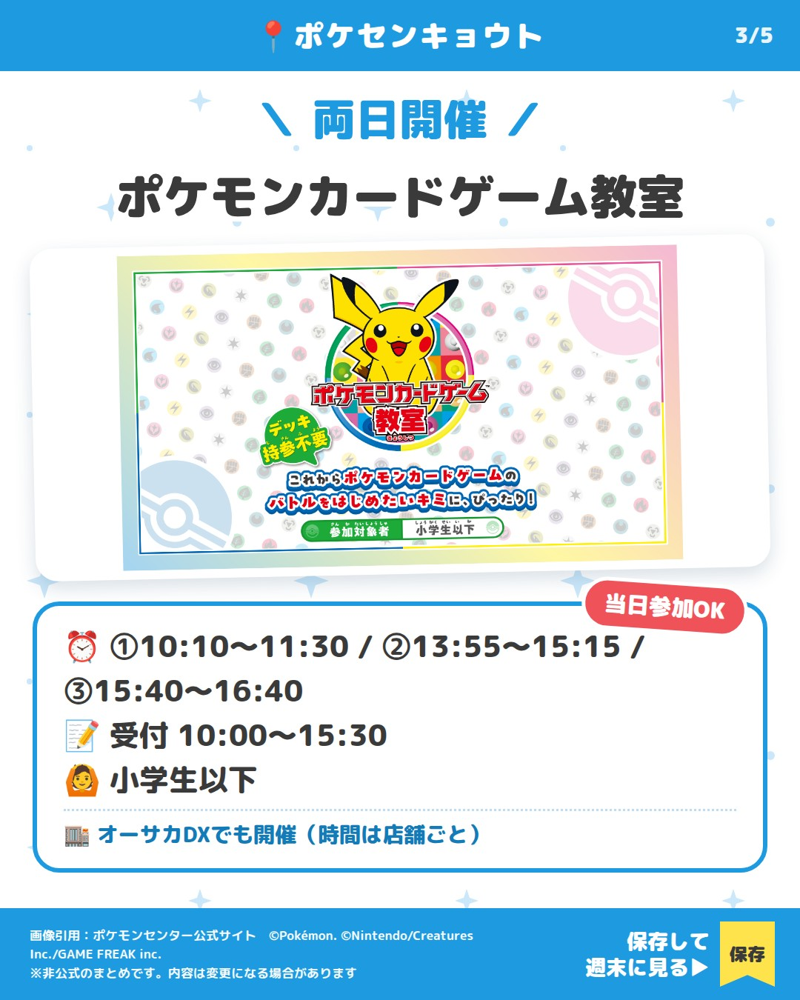

event-kansai関西の週末イベント





本文を見る（1040文字）
【今週末・関西】ポケセンで当日参加できるイベントまとめ📍 こんにちは！ポケセン週末ナビです⚡ 11/14(土)・11/15(日)に、関西のポケモンセンターで開催されるイベントをまとめたよ✨ ୨୧┈┈┈┈┈┈┈┈┈┈┈┈┈┈┈┈┈୨୧ 📍ポケセンキョウト（京都・SUINA室町） ① ポケモンカードゲーム教室 両日｜①10:10〜11:30 / ②13:55〜15:15 / ③15:40〜16:40 小学生以下・持ち物 年齢がわかる公的証明書 📍ポケセンオーサカDX（大丸心斎橋店） ② メタモンになりきり！『ぽこ あ ポケモン』街づくり体験会 15日(日)のみ｜10:00〜20:00 どなたでもOK・持ち物 なし ③ ポケモンカードゲーム教室 14日(土)のみ｜10:30〜12:00 / 13:30〜15:00 / 15:00〜16:30 小学生以下・持ち物 年齢がわかる公的証明書 🎫エントリー済みの人向け ・シティリーグ（梅田ルクア） ✔︎ 行く予定の人は【保存】しておくと、当日さっと見返せて便利だよ ✔︎ 受付時間や整理券は店舗ごとにちがうので、お出かけ前に各店舗のページもチェックしてね どのイベントに行く？コメントで教えてね💭 ※投稿の情報や画像は以下より引用しています ・ポケモンセンター公式サイト（キョウト） https://shop.pokemon.co.jp/ja/shop/pokemoncenter-kyoto/events/202610/000632.html ・ポケモンセンター公式サイト（オーサカDX） https://shop.pokemon.co.jp/ja/shop/pokemoncenter-osakadx/events/202611/000692.html ୨୧┈┈┈┈┈┈┈┈┈┈┈┈┈┈┈┈┈୨୧ ©Pokémon. ©Nintendo/Creatures Inc./GAME FREAK inc. ポケットモンスター・ポケモン・Pokémonは任天堂・クリーチャーズ・ゲームフリークの登録商標です。 ※当アカウントは個人が運営する非公式のまとめアカウントです ୨୧┈┈┈┈┈┈┈┈┈┈┈┈┈┈┈┈┈୨୧ 毎週金曜に、地域ごとの週末イベントをまとめて発信中📅 フォローして、週末のおでかけに役立ててね⚡ #ポケモン #ポケモンセンター #ポケセン #ポケ活 #ポケセンイベント #関西おでかけ